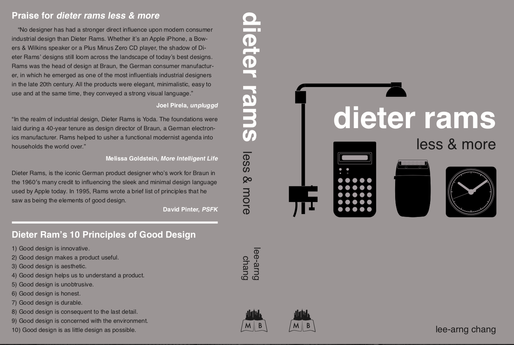
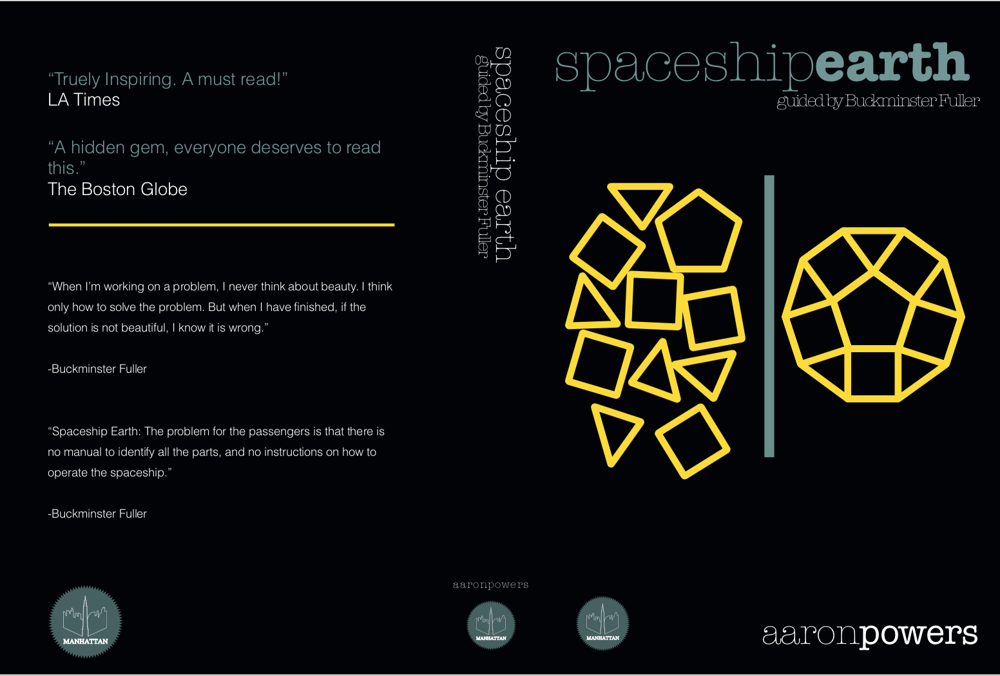
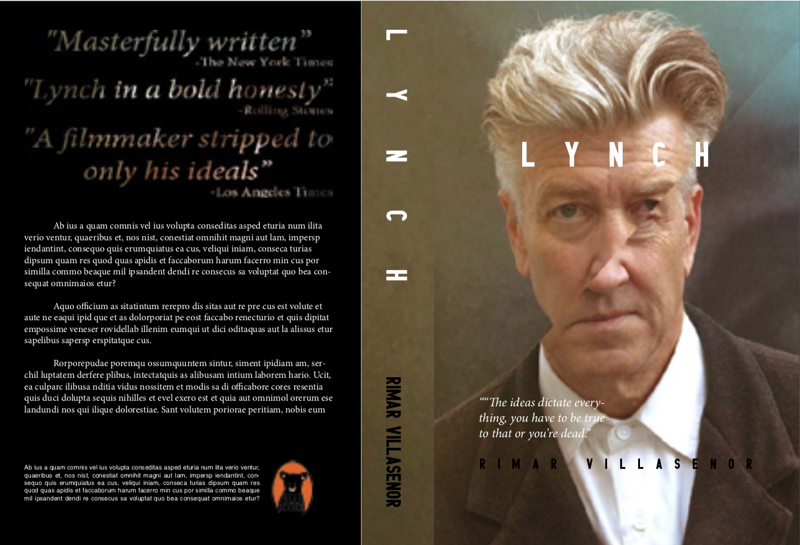

This assignment will be consisted of designing a book cover for a biography of a public, real artist. The criteria for public will be the Wikipedia; if the person has an entry on Wikipedia, they are a public person. The definition of artist can be quite broad: painter, sculptor, illustrator, writer, poet, actor, director, musician, singer, songwriter, etc.
The book will be published by an independent publisher with the name your home town. (Mine would be Rio de Janeiro Books, but you should use your own hometown.)
Title of the book
Subtitle of the book
Author of the book (use your own name)
At least one image on the background
Title of the book
Subtitle of the book
Author of the book (use your own name)
Logo of the publisher
Logo of the publisher
Barcode (download here)
Submit an Adobe Illustrator file (.ai) with two versions of the logo of your publisher:
Logo on a dark gradient background.
Logo on a light gradient background.
Meet the exercise criteria: 40%
Technique and Execution: 30%
Challenge: 20%
Aesthetic: 10%
The Illustrator deliverable will count for 25% of the grade on this project.
Submit an Adobe Photoshop file (.psd) of your background image, with all the layers, adjustment layers, and masks.
Meet the exercise criteria: 40%
Technique and Execution: 30%
Challenge: 20%
Aesthetic: 10%
The Photoshop deliverable will count for 25% of the grade on this project.
Your InDesign file must be a three-page, one-spread document. The cover and the backcover must be 6×9″, and the spine must be 1×9″.
Your images must be saved as JPEG.
Submit a .zip file of your InDesign package.
Meet the exercise criteria: 40%
Technique and Execution: 30%
Challenge: 20%
Aesthetic: 10%
The InDesign deliverable will count for 50% of the grade on this project.
Benny Ho, Ohio State, autumn 2010

Lee-Arng Chang, Ohio State, winter 2011

Aaron Powers, Ohio State, winter 2011
Morgan Perry, Ohio State, spring 2011

Rimar Villasenor, Ohio State, spring 2011